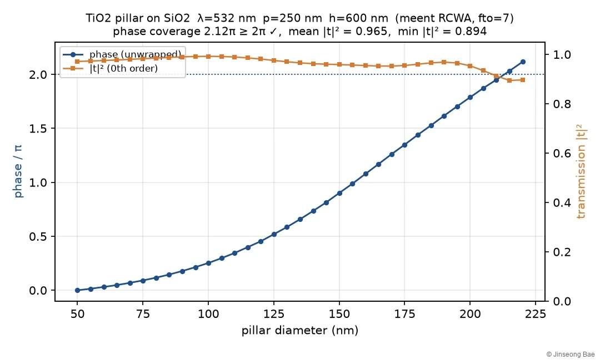
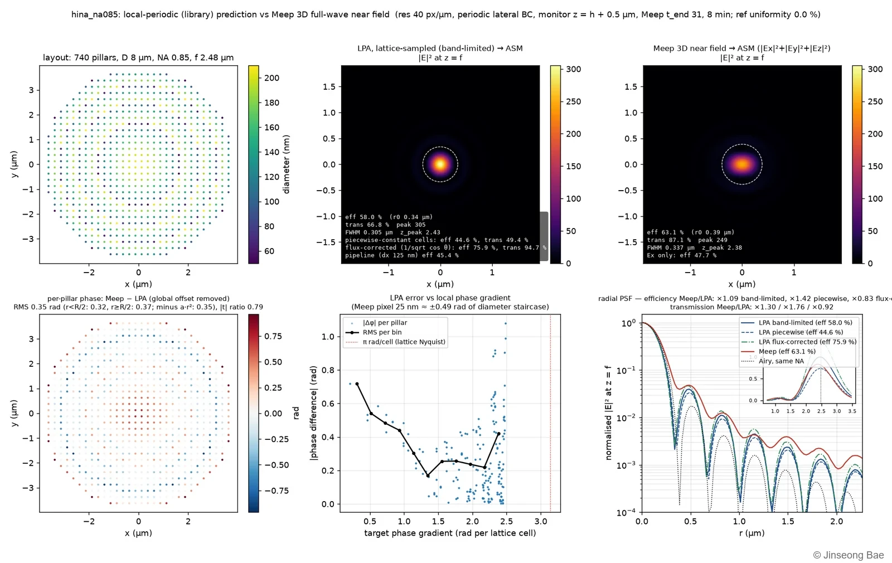

문제와 동기
메타렌즈 설계는 보통 단위셀 계산, 위상 배치, 전파 검증, 레이아웃이 서로 다른 스크립트로 흩어져 있습니다. 스펙에서 시작해 제작 파일과 검증 결과, 3D 확인까지 한 번에 잇는 공개 도구를 찾지 못해 직접 묶었습니다.
두 번째 질문은 그 도구의 전제입니다. 필러 하나하나를 무한 주기 배열 속에 있다고 보고 위상을 빌려 쓰는 LPA는 위상이 급하게 변하는 고 NA 렌즈 가장자리에서 틀어지기 쉽습니다. 어디까지 믿어도 되는지를 풀웨이브로 재지 않으면 효율 숫자를 주장할 수 없습니다.
시뮬레이션 설정
단위셀 라이브러리 (RCWA)
| 솔버 | meent (RCWA), Fourier 차수 fto 7, 래스터 256² |
|---|---|
| 구조 | SiO₂ 기판 위 원형 TiO₂ 필러, 높이 600 nm, 정사각 격자 피치 250 nm |
| 스윕 | 지름 50–220 nm, 5 nm 간격 35개 |
| 재료 | TiO₂ n 2.40 (분산 없음), SiO₂ n 1.4607 |
| 입사 | λ 532 nm, TE 수직 입사 |
렌즈 검증 (ASM)
| 전파 | 각스펙트럼법(ASM), 비근축 전파자, 소멸파 제외, 스칼라 |
|---|---|
| 격자 | dx 125 nm (필러 피치의 1/2), 1024², 패딩 2배 |
| 근접장 모델 | 대역제한(band-limited) LPA가 기본, 계단식(piecewise) LPA 선택 가능 |
| 효율 정의 | z = f 평면에서 방위각 평균 |E|²의 첫 영점 안 파워 ÷ 렌즈 개구 입사 파워 |
풀웨이브 비교 (Meep 3D)
| 대상 | D 8 µm, 필러 740개 렌즈, NA 0.3 / 0.5 / 0.7 / 0.85 |
|---|---|
| 셀 | 9 × 9 × 3 µm, 해상도 40 px/µm, 측면 주기 경계, z 방향 PML 0.5 µm |
| 소스·모니터 | 기판 안 Ex 가우시안 펄스, 필러 위 0.5 µm 평면에서 Ex·Ey·Ez DFT, 필러 없는 기준 run으로 정규화 |
| 원거리 | 근접장을 성분별 ASM으로 z = f까지 전파 |
파이프라인
- 라이브러리지름 35개를 RCWA로 풀어 위상·투과를 표로 만듭니다 (288초). 위상 범위 2.12π, 평균 |t|² 0.965.
- 위상 배치쌍곡 위상을 목표로, 원형 위상 거리 최근접 지름을 고릅니다. 전역 위상 상수 48개를 탐색해 오차가 가장 작은 값을 쓰고, |t| < 0.5인 셀은 뺍니다.
- 집속 검증LPA 근접장을 ASM으로 초점까지 전파해 효율, FWHM, Strehl을 계산합니다.
- GDSgdsfactory로 지름별 셀을 인스턴스로 배치합니다 (2.73 MB, 3초).
- 3D 뷰어three.js InstancedMesh로 필러를 그리고, 위상 오차를 색으로, 초점면 |E|²를 텍스처로 올립니다.


결과 — Ø 50 µm, f 100 µm 렌즈
필러 31,064개, 프레넬 존 5.7개 렌즈입니다. 목표 위상 대비 RMS 오차 0.067 rad(최대 0.143), 평균 |t| 0.982로 배치됐습니다.

| 집속 효율 | 78.4 % (같은 개구의 이상 렌즈 81.9 %) |
|---|---|
| 투과 | 95.2 % |
| FWHM | 1.194 µm (회절 한계 1.127 µm) |
| Strehl | 0.944 |
| 초점 위치 | z = 99 µm (설계 100 µm) |


뷰어는 실제 렌즈(필러 31,064개)를 60 fps로 그립니다. 필러 10⁶개 벤치마크(무작위 배치)는 노트북 내장 GPU(Intel Arc 140V)에서 13.6–27.5 fps로, 조작은 되지만 매끄럽지는 않습니다.
풀웨이브 검증 — LPA는 어디까지 맞나
50 µm 렌즈 전체를 3D 풀웨이브로 풀 수는 없어서, 같은 라이브러리로 만든 D 8 µm(필러 740개) 렌즈를 NA 0.3–0.85에서 Meep 3D로 풀고 세 가지 LPA 모델과 비교했습니다.

| NA | 0.3 · 0.5 · 0.7 · 0.85 |
|---|---|
| Meep 3D | 79.7 · 79.2 · 66.5 · 63.1 % |
| 대역제한 LPA | 79.2 · 76.1 · 69.2 · 58.0 % |
| 계단식 LPA | 77.2 · 70.7 · 59.2 · 44.6 % |
계단식 LPA는 NA 0.85에서 효율을 18 %p 넘게 낮게 봅니다. 대역제한 LPA는 Meep와 −2.7 ~ +5.1 %p 안에 들어 기본 검증 모델을 대역제한 LPA로 바꿨습니다. 그 결과 50 µm 렌즈 효율도 77.6 %(계단식)에서 78.4 %로 갱신됐습니다.


수렴과 교차 확인
- RCWA 차수 fto 7 → 13: 위상 차이 0.4°. 빈 셀에서 T + R = 1, 프레넬 값과 일치.
- Meep 해상도 40 → 60 (NA 0.7): 필러별 위상 RMS 차이 0.031 rad, 효율 66.5 → 66.1 %.
- 측면 경계를 PML로 바꿔도 효율 차이 1 %p 이내.
- 50 µm 렌즈는 축대칭 균질화 대리 소자로 Meep cylindrical을 돌려 해상도 20/30/45에서 59.0/67.0/68.9 %, 외삽 약 70.5 %를 얻었습니다. LPA보다 6–8 %p 낮습니다.
한계와 주장하지 않는 것
주장하는 것
- 스펙 → GDS → 검증 → 3D가 한 명령으로 이어진다
- D 8 µm, NA 0.3–0.85에서 대역제한 LPA가 Meep 3D와 −3 ~ +5 %p 안에 든다
주장하지 않는 것
- 50 µm 렌즈의 78.4 %는 모델 값이며 이 렌즈의 풀웨이브 결과가 아니다
- 재료 분산, 사선 입사, 편광 의존성은 다루지 않았다
- GDS에 DRC를 돌리지 않았고 제작하지 않았다
ASM 창 가장자리에서 스펙트럼이 약 6 % 잘려 나가며, 이것이 투과 수치의 계통 오차로 남아 있습니다.
코드 구성
library/build_library.py— meent 스윕으로 라이브러리 생성design/__main__.py— 스펙 YAML에서 GDS·검증·뷰어 데이터까지 전체 실행verify/asm.py— ASM 전파와 효율·PSF 지표verify/meep_nearfield.py,verify/compare_meep.py— Meep 3D 근접장과 LPA 비교verify/meep_cyl.py,verify/res_convergence.py— cylindrical 대리 소자와 해상도 수렴viewer/— three.js 뷰어
모든 Meep 계산은 개인 PC의 WSL에서 4프로세스로 실행했습니다. 2026년 10월 31일–11월 2일 작업입니다.